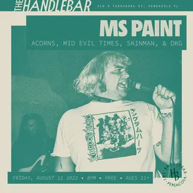
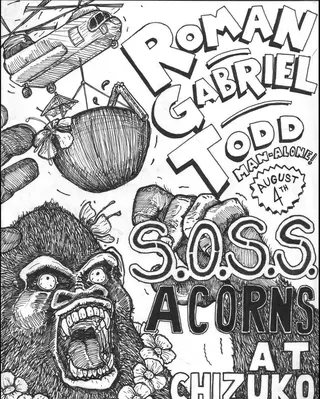
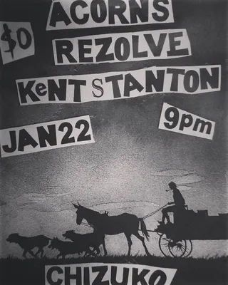
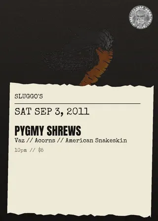
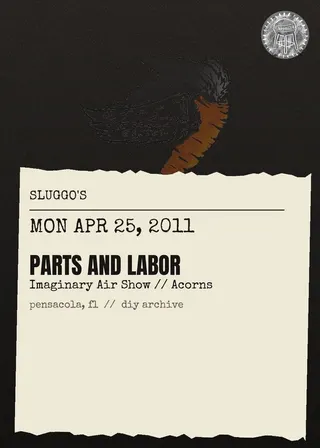
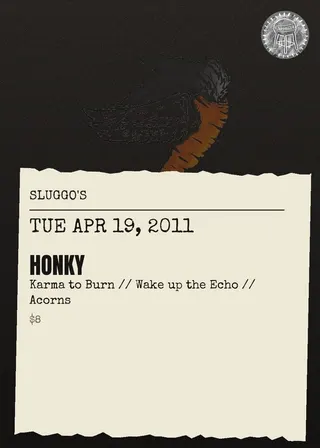

Acorns
pcola local9 shows on the diypensacola record since 2011
on the record since April 2011, first seen at sluggo's on a bill with honky and karma to burn. last seen December 2024 at the handlebar; the record's been quiet since.
- first playedApr 19, 2011 · sluggo's
- most played atsluggo's ×4 shows
- busiest year2011 · 4 shows
- biggest lineup5 acts · Aug 2022
flyer wall
Dec 9, 2024 · the handlebar Apr 30, 2022 · american legion post 33
Apr 30, 2022 · american legion post 33 Jul 12, 2011 · sluggo's
Jul 12, 2011 · sluggo's

Aug 12, 2022 · the handlebar Apr 30, 2022 · american legion post 33
Apr 30, 2022 · american legion post 33
Aug 4, 2017 · chizuko
Jan 22, 2017 · chizuko
Sep 3, 2011 · sluggo's Jul 12, 2011 · sluggo's
Jul 12, 2011 · sluggo's
Apr 25, 2011 · sluggo's
Apr 19, 2011 · sluggo'spast shows
- 2024
- 9Dec 2024Ed Hochuli High Skool, Acorns, Lobachevsky, Rat Daughterthe handlebar
- 2022
- 12Aug 2022Ms Paint, Acorns, The Mid Evil Times, Skinman, Dkgthe handlebar
- 30Apr 2022Acorns, Astral Glide, Bones, Aneurysmamerican legion post 33
- 2017
- 4Aug 2017Roman Gabriel Todd, Soss, Acornschizuko
- 22Jan 2017Acorns, Rezolve, Kent Stantonchizuko
- 2011
- 3Sep 2011Pygmy Shrews, Vaz, Acorns, American Snakeskinsluggo's
- 12Jul 2011Fordists, Zerox '82, Acorns, Jpegasussluggo's
- 25Apr 2011Parts And Labor, Imaginary Air Show, Acornssluggo's
- 19Apr 2011Honky, Karma To Burn, Wake Up The Echo, Acornssluggo's
shared bills with
american snakeskinaneurysmastral glidebonesdkged hochuli high skoolfordistshonkyimaginary air showjpegasuskarma to burnkent stanton
act pages are built automatically from the show archive, so something may be off: a misspelled name, a missing link, the wrong type, or a bad local/touring call. no disrespect meant. wrong on any of that, or want a listen link (youtube or bandcamp) or live footage added? send it in.